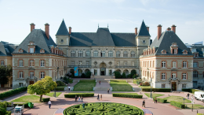
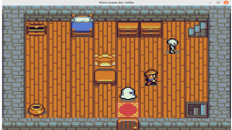
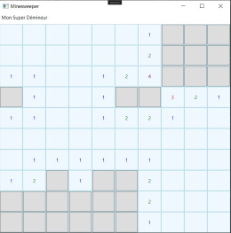
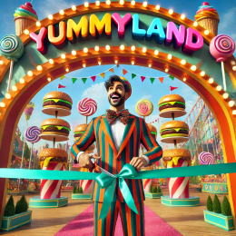
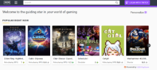
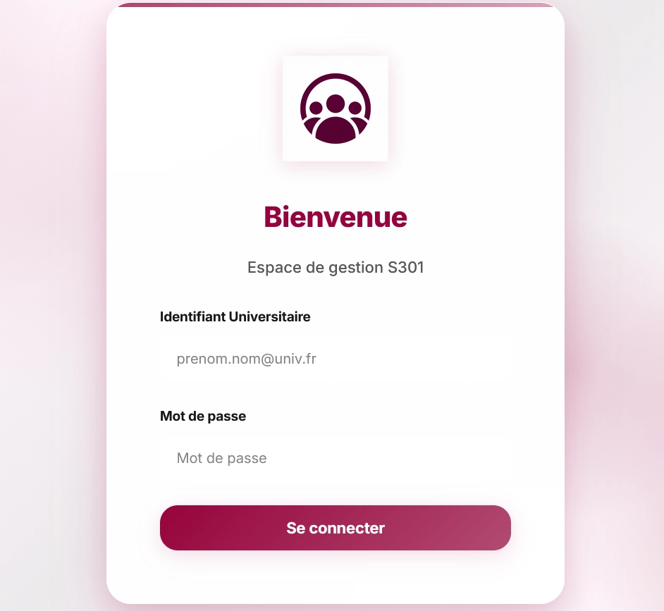
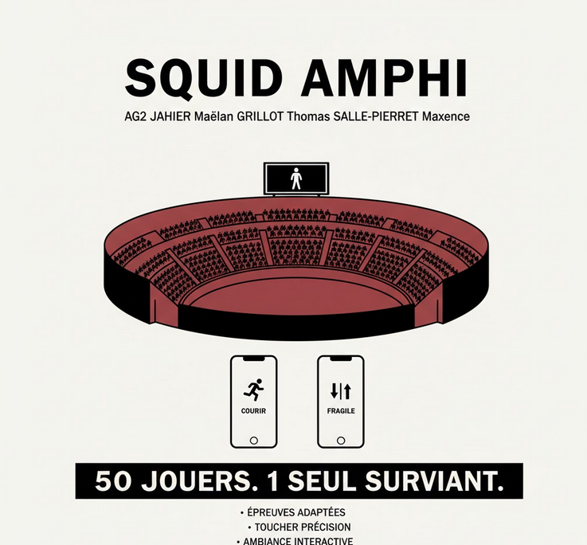
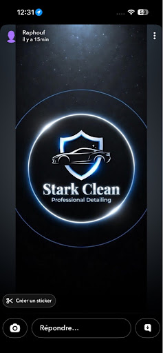

Découvrez mes projets académiques et personnels en développement logiciel, web et bases de données.

Application en Java avec interface Swing pour gérer les maisons et étudiants. Architecture MVC, diagramme UML, et intégration d’une classe Factory pour lier les composants.

Création d'un jeu vidéo en deux dimensions. Implémentation de la logique de jeu, gestion des collisions avec les ennemis et collecte d'items.

Grille dynamique, logique de découverte récursive, gestion des cases, des bombes et des drapeaux avec événements souris.

Création complète d'un site web réactif (Responsive). Travail de groupe focalisé sur le HTML5, CSS3, l'ergonomie et le design utilisateur.

Modélisation relationnelle complète, procédures stockées, triggers, vues et fonctions JSON. Gestion avancée des droits utilisateurs.

Hackathon en équipe autour d’un projet informatique. Gestion du temps serrée, esprit d’équipe, présentation finale et programmation collaborative.

Application Java permettant d'automatiser la création de groupes d'étudiants. Modélisation UML/JMerise et architecture MVC.

Développement de la logique d'un jeu vidéo en 2D sur 3 mois. Phase de comparaison d'approches algorithmiques pour optimiser les performances.

Conception et développement d'une solution logicielle répondant à un besoin spécifique (Architecture, BDD et interface utilisateur).